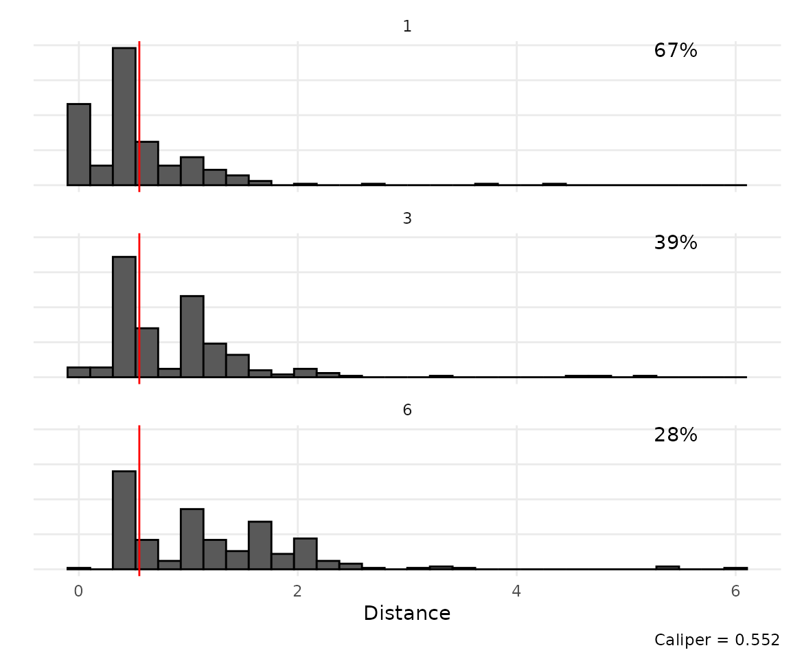
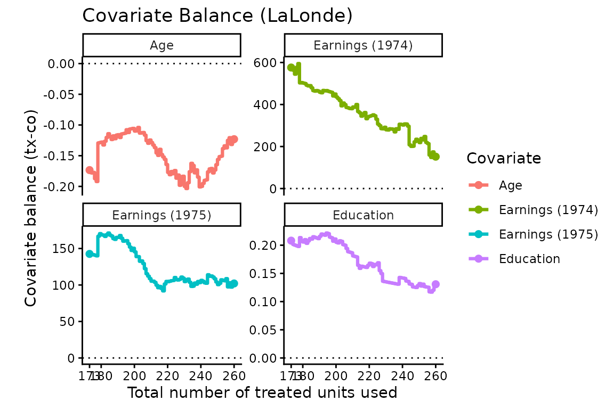
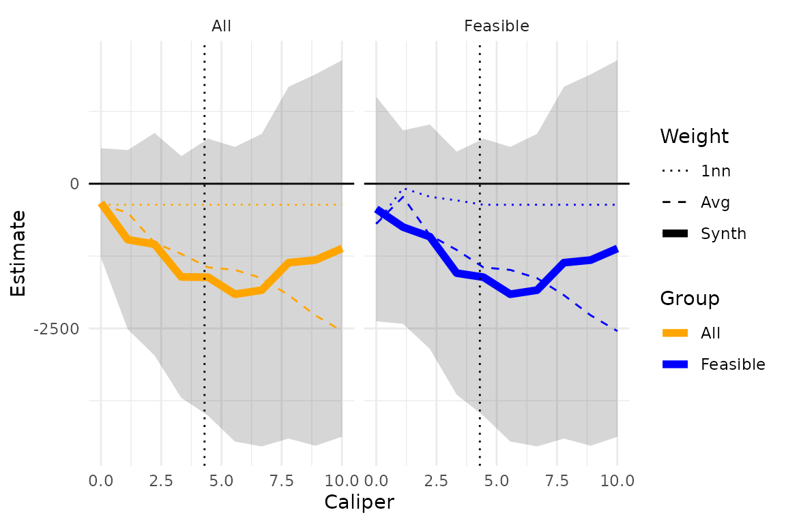

Using CSMatch in Practice: The LaLonde Empirical Example
Source:vignettes/lalonde-example.Rmd
lalonde-example.RmdThis vignette walks through fitting Caliper Synthetic Matching (CSM)
to a real, and unusually difficult, dataset: the LaLonde job-training
data. The goal here is not to re-derive the method (see the paper, Che,
Meng, & Miratrix, 2024, Caliper Synthetic Matching, for
that) but to show the sequence of decisions an analyst actually makes
when using the CSMatch package – choosing a distance metric
and caliper, checking match quality, comparing weighting schemes, and
finally estimating an effect – and which package functions support each
decision.
The full script this vignette is adapted from, including data
cleaning and additional diagnostics, lives in
scripts/lalonde-analysis/ in the package’s GitHub
repository.
The data
The LaLonde data are a classic within-study comparison: we take the control group of the National Supported Work Demonstration (NSWD), a randomized job-training experiment, and match it to a large pool of possible comparison units drawn from the Current Population Survey (CPS). Because both groups are, in truth, “controls” (neither received the job-training program), a good matching method should estimate an effect close to 0. Any nonzero estimate is evidence of residual bias from imperfect matching.
This is a genuinely hard matching problem: NSWD participants look very different from the general CPS population (much lower prior earnings, different demographics), so good matches are scarce for many units. We use this dataset to illustrate not just the mechanics of the package but also the trade-offs analysts have to navigate when overlap is poor.
lalonde_df <- readRDS(
system.file("extdata", "lalonde_for_analysis.rds", package = "CSMatch")
)
dim(lalonde_df)
#> [1] 16252 10
table(lalonde_df$Z)
#>
#> 0 1
#> 15992 260The treatment indicator is Z (1 = NSWD, 0 = CPS) and the
outcome Y is 1978 earnings. Covariates have already been
renamed to X1-X8: indicators for race,
ethnicity, marital status, and lack of a degree, plus age, years of
education, and earnings in 1974 and 1975.
Deciding which covariates matter
Before touching the outcome, we explore which covariates are most related to treatment assignment, so we know where to focus our caliper choices. A simple propensity score model is enough for this:
lalonde_df <- lalonde_df %>%
mutate(
X1 = as.numeric(X1), X2 = as.numeric(X2),
X3 = as.numeric(X3), X4 = as.numeric(X4),
COLL = ifelse(X6 >= 16, 1, 0) # college completion indicator
)
ps_fit <- glm(Z ~ X1 + X2 + X3 + X4 + X5 + X6 + X7 + X8,
data = lalonde_df, family = binomial())
lalonde_df$logit_p <- predict(ps_fit, type = "link")Looking at standardized coefficients (not shown here) flags race, Hispanic ethnicity, having a college degree, and 1975 earnings as the most predictive covariates, and overlap on the propensity score is poor: the vast majority of CPS control units look nothing like a typical NSWD participant. This tells us two things: (1) we should make sure our distance metric weights these variables appropriately, and (2) we should expect many treated units to have no good match at all, which the caliper mechanics below are designed to handle gracefully.
We carry two derived covariates forward into the matching step
alongside the original X1-X8:
COLL (college completion) and logit_p (the
propensity score on the logit scale), which acts as a one-dimensional
summary of everything else in the propensity model.
Choosing a distance metric and caliper
get_cal_matches() needs a distance
metric, a per-covariate scaling, and an
initial caliper. These jointly define what “close”
means. We use the scaled
(“maximum”) distance, which behaves like Coarsened Exact Matching: two
units are within caliper
only if every scaled covariate difference is within
.
The scaling vector is where the substantive decisions live. We:
- Exactly match on the binary covariates (race, ethnicity, marital status, degree status) by giving them a very large scaling constant, so any mismatch on them blows past the caliper.
- Set a caliper of 3 years on age and 2 years on education by scaling those covariates by and respectively – i.e. a caliper of 1 on the scaled distance corresponds to a difference of at most 3 years of age (or 2 years of education).
- Set a caliper of $5,000 on 1974 earnings and $1,400 on 1975 earnings ($1,400 because 1975 earnings turned out to matter more, per the propensity model, so we ask for a tighter match on it).
- Add calipers of 0.5 on college completion and about 0.35 (0.2
treatment-group standard deviations of the logit propensity score) on
logit_p, so overall propensity similarity also constrains matches, without dominating the more interpretable, substantive covariates above.
DIST_SCALING <- tibble(
X1 = 1000, # % Black (exact match)
X2 = 1000, # % Hispanic (exact match)
X3 = 1000, # % Married (exact match)
X4 = 1000, # % No degree (exact match)
X5 = 1 / 3, # Age (caliper of 3 years)
X6 = 1 / 2, # Years of education (caliper of 2 years)
X7 = 1 / 5000, # 1974 earnings (caliper of $5,000)
X8 = 1 / 1400, # 1975 earnings (caliper of $1,400)
COLL = 1 / 0.5, # College completion
logit_p = 1 / 0.35 # Propensity score (logit scale)
)A caliper of 1 on this scaled distance is what we will start with: a unit is a candidate match only if it is within all of these substantive tolerances at once (or the corresponding one for whichever covariate happens to be the “binding” one for that pair).
Fitting an initial match
get_cal_matches() does the matching and, with
est_method = "csm", also solves for synthetic-control
weights within each treated unit’s matched set. Because overlap is poor
here, we use rad_method = "adaptive": treated units whose
matched set is empty at the initial caliper get their caliper
grown just enough to capture at least one control, rather than
being dropped.
lalonde_scm <- lalonde_df %>%
get_cal_matches(
form = Z ~ X1 + X2 + X3 + X4 + X5 + X6 + X7 + X8 + COLL + logit_p,
caliper = 1,
metric = "maximum",
rad_method = "adaptive",
scaling = DIST_SCALING,
est_method = "csm"
)
lalonde_scm
#> csm_matches: matching with "maximum" distance and "adaptive" radii
#> aggregating sets with "csm" method
#> match covariates: X1, X2, X3, X4, X5, ...
#> 260 treated units matched to 1120 of 15992 control units
#> (49 exact matches, 232 below caliper, 28 above caliper)
#> Adaptive calipers: 1, 1, 1, 1, 1, ...
#> Target caliper = 1
#> Max distance ranges 0.333 - 4.299
#> scaling: 1000, 1000, 1000, 1000, 0.333, ...The printout already tells us this is a hard matching problem: many treated units needed an adaptive caliper well above 1 to find even one control.
Picking a tighter caliper from the data
An initial caliper of 1 was really just a starting point (it is large
enough that everyone gets matched, one way or another). To pick a more
meaningful caliper, caliper_distance_plot() shows the
distribution, across treated units, of the distance to their 1st, 3rd,
and 6th closest control, and can back out the caliper needed to hit a
target coverage rate:
cdp <- caliper_distance_plot(lalonde_scm, tops = c(1, 3, 6),
target_percentile = 2 / 3)
cdp
We ask for the caliper that would give about two-thirds of treated units at least one match within caliper (a deliberately tight target, chosen here to leave a sizeable “infeasible” group to illustrate caliper sensitivity below). The plot both shows this graphically and returns the value as an attribute, so we can use it directly rather than reading it off the plot:
new_caliper <- attr(cdp, "caliper")
new_caliper
#> 66.66667%
#> 0.5521338We refit with update_matches(), which reuses every other
setting from the original call:
lalonde_scm <- update_matches(lalonde_scm, lalonde_df, caliper = new_caliper)
lalonde_scm
#> csm_matches: matching with "maximum" distance and "adaptive" radii
#> aggregating sets with "csm" method
#> match covariates: X1, X2, X3, X4, X5, ...
#> 260 treated units matched to 703 of 15992 control units
#> (49 exact matches, 173 below caliper, 87 above caliper)
#> Adaptive calipers: 0.552, 0.552, 0.552, 0.552, 1, ...
#> Target caliper = 0.55213382161458
#> Max distance ranges 0 - 4.299
#> scaling: 1000, 1000, 1000, 1000, 0.333, ...Some treated units are now “feasible” (they have a match within the target caliper of 0.552) and some are not (their individual adaptive caliper had to grow further). We will come back to this feasible/infeasible split when estimating effects.
Checking covariate balance
Before looking at any outcomes, we check whether the matched sample
achieves reasonable covariate balance – this is a diagnostic step we can
iterate on freely, since it does not touch Y and so cannot
introduce outcome-driven bias (“fishing”).
covs_names <- c("Age", "Education", "Earnings (1974)", "Earnings (1975)")
love_plot(lalonde_scm, covs = c("X5", "X6", "X7", "X8"),
covs_names = covs_names) +
labs(title = "Covariate Balance (LaLonde)")
The love plot adds treated units one at a time, in order of increasing adaptive caliper (i.e. easiest-to-match units first), and tracks the running treated-vs-control mean difference on each covariate. A roughly flat, near-zero line means balance does not deteriorate as we absorb harder-to-match units.
Comparing weighting schemes before looking at outcomes
CSM’s synthetic-control weighting is one of several ways to combine
the units inside a matched set; simple averaging (like CEM) and
1-nearest-neighbor are common alternatives.
sensitivity_table() fits all of them and reports effective
sample size and match-quality metrics side by side, which lets us reason
about the bias/variance trade-off before committing to a
weighting scheme:
sensitivity_table(lalonde_scm, include_distances = TRUE) %>%
select(Estimate, N_T, N_C, ESS_C, mean_dist, median_dist, SE_star, SE_ratio, bias_ratio)
#> # A tibble: 6 × 9
#> Estimate N_T N_C ESS_C mean_dist median_dist SE_star SE_ratio bias_ratio
#> <chr> <int> <int> <dbl> <dbl> <dbl> <dbl> <dbl> <dbl>
#> 1 ATT 260 178 65.1 0.454 0.333 0.139 1.08 0.863
#> 2 ATT_1nn 260 195 69.7 0.508 0.333 0.135 1.06 0.965
#> 3 ATT_raw 260 703 80.1 0.526 0.333 0.128 1 1
#> 4 FATT 173 134 45.6 0.161 0.0317 0.167 1.30 0.306
#> 5 FATT_1nn 173 142 51.9 0.240 0.333 0.158 1.24 0.456
#> 6 FATT_raw 173 654 66.2 0.267 0.25 0.144 1.13 0.508ESS_C is the control group’s effective sample size – how
many “independent” control units the weighting scheme is effectively
using after accounting for reuse and unequal weights.
mean_dist/median_dist summarize how close each
treated unit’s (weighted) synthetic control is to the treated unit
itself, which relates to potential extrapolation bias: the closer to 0,
the less we are relying on the model implicitly extrapolating between
units. SE_star is a rule-of-thumb pseudo-SE,
,
useful for relative comparisons across rows here, not as a
standalone SE. SE_ratio and bias_ratio express
each method relative to the unweighted, raw average (*_raw)
as a baseline.
In this dataset, the synthetic weighting
(ATT/FATT) meaningfully reduces the average
distance to the matched controls relative to raw averaging, at the cost
of a smaller effective sample size (more reuse of a few good controls)
and therefore a larger SE. Whether that trade is worth it is a judgment
call that depends on the application; sensitivity_table()
is meant to make that trade-off visible so the decision is deliberate
rather than a byproduct of a default setting.
Estimating the effect
With the matching and weighting settled, estimate_ATT()
computes the point estimate and its standard error. We report both:
- The SATT (sample average treatment effect on the treated), using every treated unit, including the “infeasible” ones matched only via an enlarged adaptive caliper.
- The FSATT (“feasible” SATT), restricting to treated units that had a match within our chosen target caliper.
estimate_ATT(lalonde_scm, outcome = "Y")
#> # A tibble: 1 × 12
#> ATT SE N_T N_C ESS_C sigma_hat V_E p_drop S0_sq S1_sq cov_w_s
#> <dbl> <dbl> <int> <int> <dbl> <dbl> <dbl> <dbl> <dbl> <dbl> <dbl>
#> 1 -460. 592. 260 178 65.1 NA 350657. 0.419 1.71e7 2.29e7 -2.58e6
#> # ℹ 1 more variable: t <dbl>
estimate_ATT(lalonde_scm, outcome = "Y", feasible_only = TRUE)
#> # A tibble: 1 × 12
#> ATT SE N_T N_C ESS_C sigma_hat V_E p_drop S0_sq S1_sq cov_w_s
#> <dbl> <dbl> <int> <int> <dbl> <dbl> <dbl> <dbl> <dbl> <dbl> <dbl>
#> 1 -237. 686. 173 134 45.6 NA 469924. 0.260 1.53e7 2.30e7 -1.49e6
#> # ℹ 1 more variable: t <dbl>Recall the target here is 0 (we are matching NSWD controls to CPS “controls”). Both estimates are statistically indistinguishable from 0 given their standard errors, which is reassuring given how difficult this matching problem is – but the SATT and FSATT need not always agree. When they diverge, it is worth asking why:
- If the infeasible treated units look systematically different from the feasible ones, the discrepancy may reflect real effect heterogeneity, in which case the SATT (using everyone) is the more generalizable estimate.
- If instead it reflects a steep drop-off in match quality for the infeasible units, the FSATT (using only well-matched units) may be the more trustworthy estimate, at the cost of generalizing to a narrower population.
Checking robustness to the caliper choice
Because the caliper of 0.552 was itself a choice, it is worth
checking how sensitive the ATT/FATT estimates are to it.
caliper_sensitivity_table() refits the match across a grid
of calipers (this is the most expensive step in this vignette – we use a
coarser grid, R = 10, than the R = 30 used for
the smoother curves in the paper):
cal_sens_tbl <- caliper_sensitivity_table(
lalonde_scm, lalonde_df,
R = 10, outcome = "Y",
min_cal = 0, max_cal = 10.01
)
caliper_sensitivity_plot(cal_sens_tbl, focus = c("ATT", "FATT")) +
facet_wrap(~feasible) +
geom_vline(xintercept = max(lalonde_scm$adacalipers), lty = 3)
The dotted line marks the caliper large enough to make every treated unit feasible (at which point the FSATT and SATT panels necessarily agree). Watching how the CSM, 1-nearest-neighbor, and raw-average lines move (or don’t) as the caliper widens is a useful diagnostic: here, the raw average estimate drifts steadily away from 0 as poorer matches are absorbed, while CSM’s synthetic weighting stays closer to 0 across the range – evidence that the synthetic step is doing real work to control extrapolation bias in this hard-to-match setting.
Summary: the decisions, in order
- Explore covariate importance and overlap (e.g. via a propensity model) before touching the matching call, to know where calipers need to bind tightly.
-
Choose a distance metric and per-covariate scaling
that encodes substantive tolerances (e.g. “a 3-year age gap is as bad as
a $5,000 earnings gap”), using
get_cal_matches()’sscalingargument – exact-match binaries with a large scaling constant. -
Pick a caliper using
caliper_distance_plot()against a target coverage rate, and refit cheaply withupdate_matches()as that choice changes. -
Check balance with
love_plot()and compare weighting schemes withsensitivity_table()– all before looking at the outcome, so these choices can’t be accused of fishing. -
Estimate both the SATT and FSATT with
estimate_ATT(), and usecaliper_sensitivity_table()/caliper_sensitivity_plot()to see whether the conclusion is robust to the caliper choice or is instead an artifact of it.